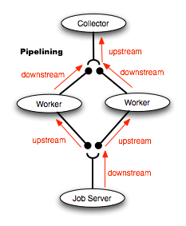
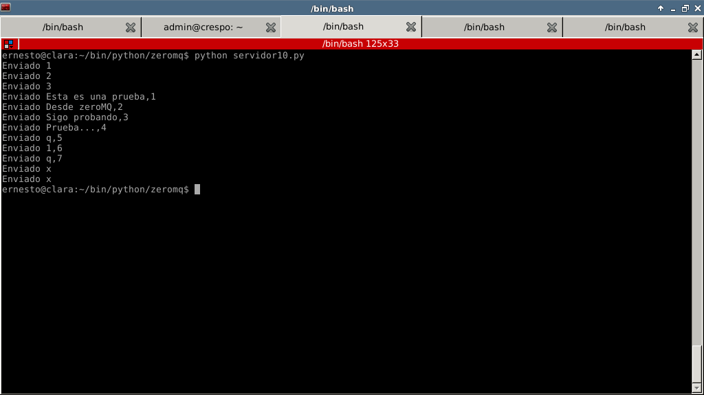
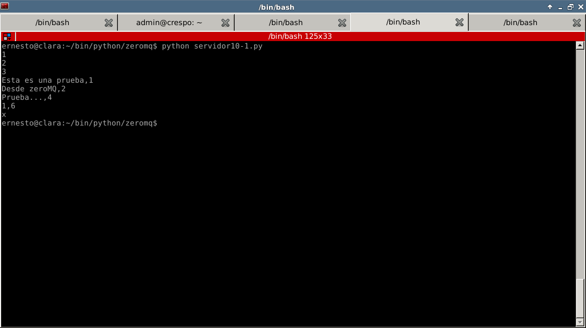
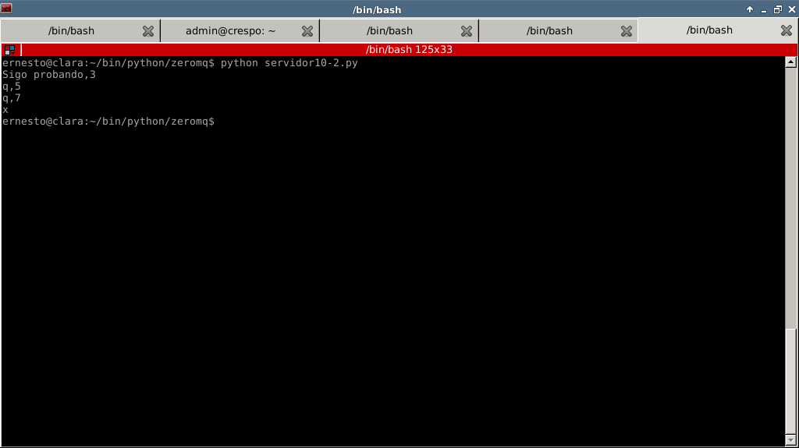

Tutorial de ZeroMQ con Python( Pipelining). Parte 7.
Posted on sáb 30 junio 2012 in Tutorial Python • 3 min read
Siguiendo con los ejemplos sobre ZeroMQ, ahora mostraré como usar diferentes tipos de transporte (antes se mostrada a tcp, ahora se usará tcp e ipc el cual es un modelo de comunicación interprocesos y puede ser de ayuda cuando se necesita baja latencia).
Luego de escoger la capa de transporte se selecciona un patrón de mensaje, en artículos anteriores se ha mostrado los patrones REQ/REP, PUB/SUB y Pair, sólo queda por explicar su funcionamiento el patrón UPSTREAM/DOWNSTREAM.
El patrón UPSTREAM/DOWNSTREAM se parece al patrón REQ/REP, la diferencia es que en REQ/REP puede existir comunicación bidireccional en cambio con UPSTREAM/DOWNSTREAM se tiene una comunicación en un sólo sentido y permite paralelizar procesos. En la figura se muestra el flujo de trabajo.

Un ejemplo de su posible uso tomado del artículo de Nicholas Piël es que se tenga un sistema de reconocimiento de imágenes en tiempo real, el servidor captura las imágenes y se las envía a los workers para que sean procesadas, y al terminar dicho proceso se envían las imágenes al colector.
El servidor simplemente tiene 2 listas una de cadenas de texto que al final envía 2 "x" para que los clientes finalicen. Se crea un socket con capa de transporte tcp para envíar la lista de números, luego se crea el socket para ipc y se envía las cadenas de texto.
Se notará que los clientes simplemente se conectan al servidor, uno de los clientes se conecta por tcp y el otro por ipc.
El código del servidor se muestra a continuación:
#!/usr/bin/env python
#Se importa zeroMQ y sleep de time
import zmq
from time import sleep
#Se crea la instancia del contexto
ctx = zmq.Context()
#Se crea el socket con parametro DOWNSTREAM
socket = ctx.socket(zmq.DOWNSTREAM)
#Se crea una lista de textos
lista1 = ("Esta es una prueba,1","Desde zeroMQ,2","Sigo probando,3","Prueba...,4","q,5","1,6","q,7","x","x")
#Se crea una lista de un rango de numeros
lista2 = range(1,4)
#Se asocia el socket a una IP y puerto
socket.bind("tcp://127.0.0.1:12345")
#Se envia la lista de numeros a los clientes
#que se conectan al servidor.
#El envio se hace cada segundo.
for i in lista2:
socket.send("%s" %i)
print "Enviado %s" %i
sleep(1)
#Se asocia el socket a un archivo por
#medio del transporte ipc
socket.bind("ipc:///tmp/zmqdemo")
#Se envia la lista de textos a los clientes conectados
#el envio se realiza cada segundo.
for i in lista1:
socket.send(i)
print "Enviado %s" %i
sleep(1)
El código del cliente que usa tcp como transporte se muestra a continuación:
#!/usr/bin/env python
#Se importa el modulo zeroMQ
import zmq
#Se crea la instancia del contexto
ctx = zmq.Context()
#Se crea el socket con Parametro UPSTREAM
socket = ctx.socket(zmq.UPSTREAM)
#Se conecta el socket (tcp) al servidor y su puerto
socket.connect("tcp://127.0.0.1:12345")
#Se crea un ciclo que recibe lo que envia el
#servidor y lo muestra en pantalla
#y se recibe la letra x finaliza la conexion del cliente
while True:
rcv = socket.recv()
if rcv == "x" :
print rcv
break
print rcv
Se muestra el código del cliente utilizando como transporte ipc:
#!/usr/bin/env python
#Se importa el modulo zeroMQ
import zmq
#Se crea la instancia del contexto
ctx = zmq.Context()
#Se crea el socket con parametro UPSTREAM
socket = ctx.socket(zmq.UPSTREAM)
#Se conecta el socket a un archivo temporal
#por medio de ipc como transporte
socket.connect("ipc:///tmp/zmqdemo")
#Se crea un ciclo para recibir
#la informacion del servidor
#se muestra en pantalla
#si se recibe la letra x
#finaliza la conexion con el servidor
while True:
rcv = socket.recv()
if rcv == 'x':
print rcv
break
print rcv
La siguientes figuras muestran el resultado en el servidor y ambos clientes: Servidor:

Cliente (tcp):

Cliente (ipc):

Como se nota en las figuras de los clientes, la información que envía el servidor a los clientes se distribuye entre ambos.
¡Haz tu donativo! Si te gustó el artículo puedes realizar un donativo con Bitcoin (BTC) usando la billetera digital de tu preferencia a la siguiente dirección: 17MtNybhdkA9GV3UNS6BTwPcuhjXoPrSzV
O Escaneando el código QR desde la billetera: